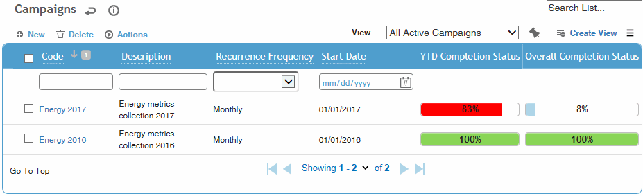
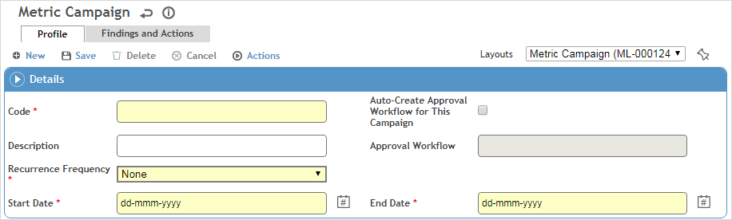
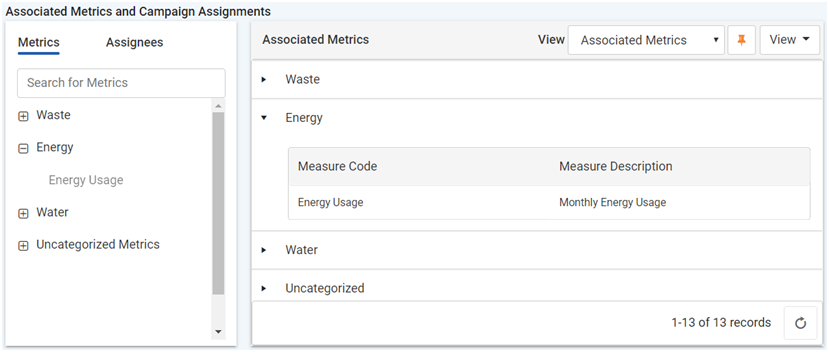
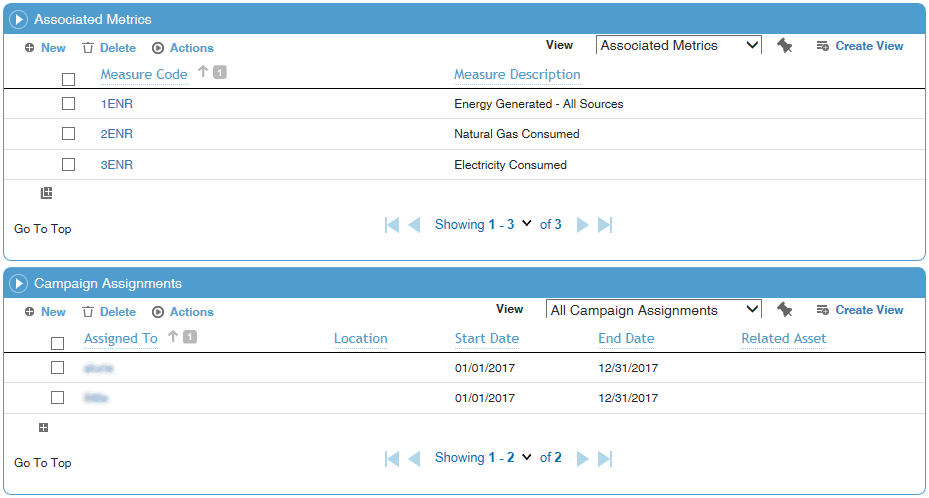

If you have a group of metrics for a common topic or program that share the same collection period, recurrence frequency, assignees, locations and start and end date, you can combine them into a single record or “campaign”. This streamlines metric management and assignment, and allows assignees to record data for many metrics in a single screen in the Portal.
Existing metrics may be added to a campaign, or you can create new metrics from within a campaign.
A campaign can be routed through an approval workflow; see Using Approval Workflows for a Campaign.
Campaigns may be imported into Cority using the Import Utility (see Importing Text or XML Files into Cority Tables).
In the Business Intelligence menu, click Campaigns.

All campaigns are listed, along with progress bars that reflect:
YTD Completion Status – percentage of campaign metrics completed vs the total due up to today’s date.
Overall Completion Status – percentage of campaign metrics completed vs the total required over the course of the campaign.
Click on any status bar to generate a Missing Data Report that provides a list of the due and overdue metrics associated with the campaign.
In the Campaigns list, click a link to edit an existing campaign, or click New.

Enter a Code for the campaign, and select the Recurrence Frequency, Start Date and End Date. A campaign must have a defined end date so that the % Completed can be calculated.
If you want to use the approval workflow, select Auto-Create Approval Workflow for This Campaign to generate approval records for the data gathered in this campaign, and select the Approval Workflow type to use. See Using Approval Workflows for a Campaign.
The “Campaign Interface” system setting determines if you see the Dynamic interface or the Standard interface. Continue according to the interface you are using:
Dynamic Interface:
Click Save to enable the Associated Metrics and Campaign Assignments section.

The Metrics tab displays metrics that match the selected Recurrence Frequency and Start/End Dates. Drag the required metrics to the right side. If you drag a parent node, the child nodes will be included.
The metric name in the Associated Metrics section is a hyperlink that you can click to view its completion history.
The Assignees tab groups users according to those who have previously been assigned to a campaign, and others who are granted the appropriate security permissions. Drag the appropriate user(s) to the right side and enter the Start/End Dates of their assignment.
To remove a metric or assignee, drag the record back to its respective tab.
Click Build to create the assignments. This process will be completed in the background; users will not see their assigned metrics until processing is complete.
In the current version, the Build button must be added to a custom layout.
Standard Interface:

In the Associated Metrics section, identify the metrics that are part of the campaign: either create new metrics or select existing metrics. Please note:
New metrics inherit the Recurrence Frequency and Start Date of the campaign.
Existing metrics must have the same Recurrence Frequency as the campaign, a Start Date on or before that of the campaign, and either no End Date or an End Date that is after the campaign’s End Date.
Cority-created Target and Equation metrics cannot be added to a campaign.
In the Campaign Assignments section, identify the assignees for the campaign. The assignee is added to each metric record.
See Setting Up Custom Metrics for information about creating and assigning metrics.
The Findings and Actions tab displays all findings and actions relating to metrics in the campaign. A metric entry cannot be approved by the administrator until all actions are also closed. For information about recording a finding and its actions, see Recording a New Finding.
Click Save.